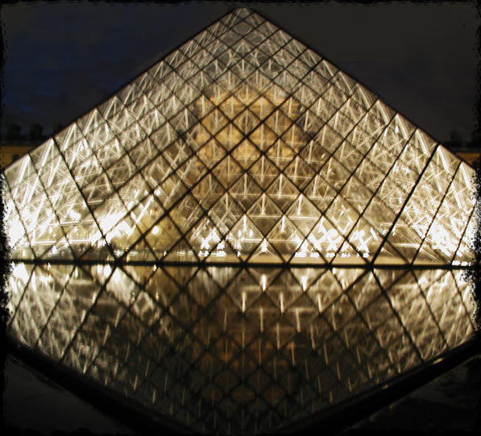

|
 |
||
June 06, 2002.... Into my fifth month of travels... What began in January in Sweden, took me next to Southern France (Perpignan),,, to Italy (Assisi, Rome, Florence) onto Paris,,, Eindhoven,,, Amsterdam,,, Germany,,, to Zurich, Switzerland,,, Venezia,,, Padova,,, Firenze,,, Roma,,, then my two euro flights to Rhodes, Greece,,, back to Rome, Florence, pit-stop in Montesquieu, before heading to Barcelona in April for spring break. Then I drove to Mijas, Malaga, Gibraltar, Granada, up to Madrid, where I spent a fabulous birthday, the biG 35 yikes! For some reason, I keep returning to Tuscany; Florence in particular. I traveled there from Madrid, which is a train ride of at least 29 hours with five changeovers.... Madrid, Barcelona, Cerbére (the border between Spain and France) The tracks are different size in Spain, which means you either have to switch trains or catch the Talgo, which switches itself. From Cerbére, I went to Ventimiglia, Pisa, then Florence. I was hired to go sell pelle (leather jackets) at a military bazaar in Aviano, north of Venice. Being it was 28c/80f outside, there wasn't much business for leather jkts. During the boredom as a sales clerk I crafted jewelry and made $120 in U.S. minT. The vino was plentiful at the tasting stands next to ours, plus we had plenty of goodies to cleanse the palate. |
Next, I returned to Paris. The last time I left florence en route to Paris, I met Marta from Naples, who lives in Paris. The stay at the Louvre hostel wasn't too shabby, but this time I got to stay at Marta's new flat and what a treat!!! Marta is chef extraordinaire even in a 3' x 5' kitchen. After a week in parigi, it was time to head back to Montesquieu. This time I recalled that a closer train station to the Corbeeks' was not Perpignan, but Argeles. So I bought my ticket from Paris to Argeles. However, there are two towns called Argeles. The clerk didn't ask me which... One is high in the Pyrenees mountains, which I soon discovered after traveling there by mistake. The train ride from Paris to Lourdes took all nite, then there was a bus ride to Argeles. Once there, I realized that the green misty mountains were more beautiful than ever,,, why did I miss this beauty the last time I was there?? I got off the bus and found out I was 500 km off-track. Where I needed to go was the other Argeles !! It took all night to reach Southern France; grateful for a cool book borrowed from Madrid, Black Ice, to keep me awake through the dawn-hour changeovers. |
I rented a flat for the month of June in Madrid so I won't need to sleep on the living room foamboard at Mike and Nacho's pad; family i've inherited from Sonny & Anne at Nippers in Pasadena (my good ole Caltech buddies & hairdressers to me and Stephen Hawking!) Mike & Maria-- and all their friends are awesome musicians. Nora owns the Rock Palace, a rehearsal & recording studio, and baR... and sO,,, music and dance fill the void. Lots of places to see, pictures to take, food to eat, vino to drink, books to read, and people to meet. Best time of my life. Surviving Europe on a lot of credit and not enough Euros...a novel to write. |
|
sweden
| coulliour | assisi
| rome | florence
| paris | amsterdam
| zurich | venice |
||